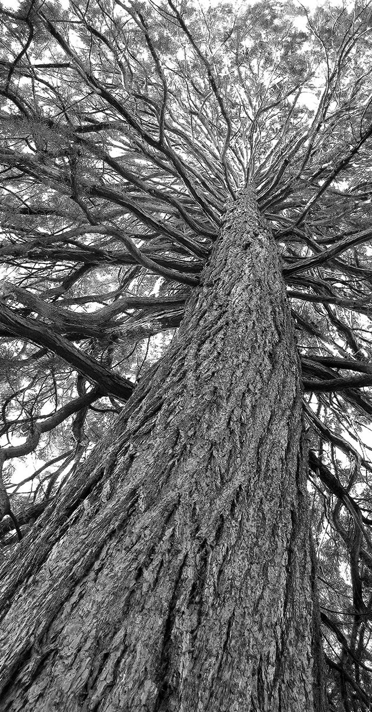
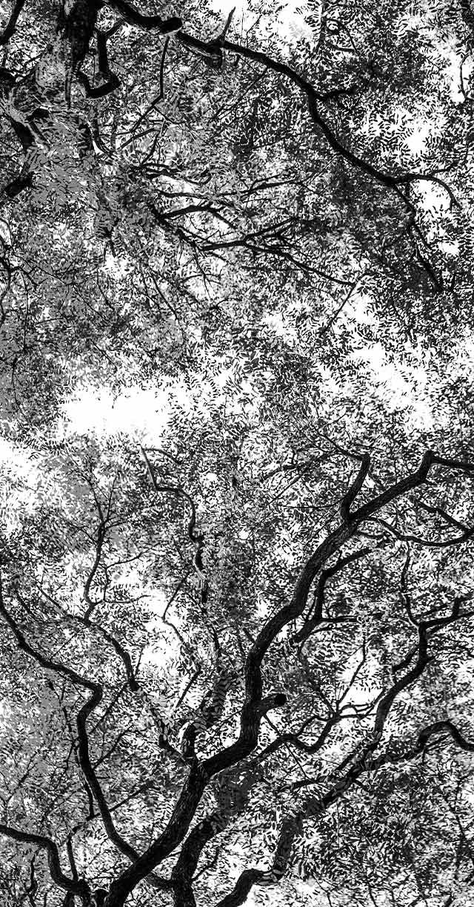
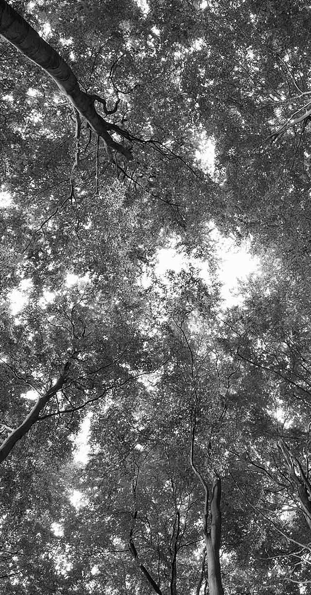
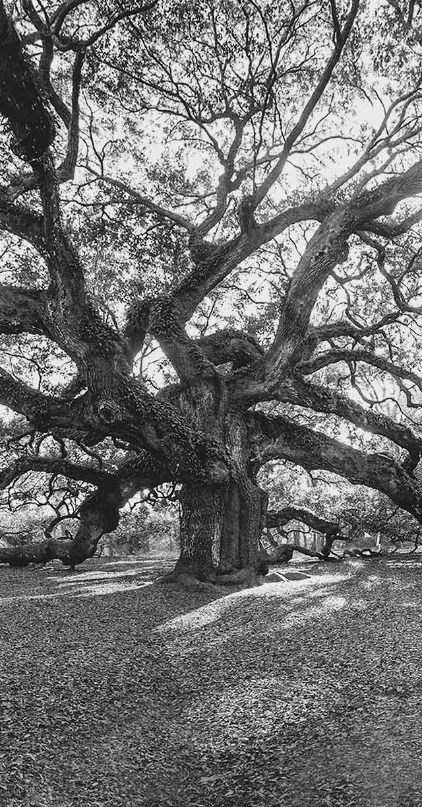
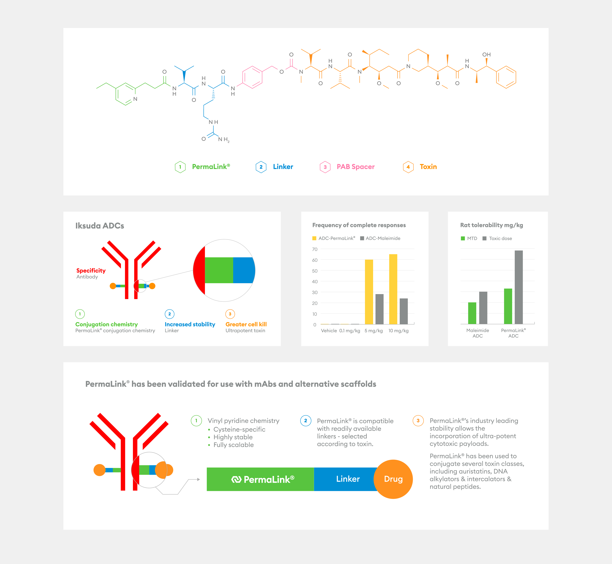

Iksuda
Iksuda Therapeutics is a biotech company. They offer antibody-based therapies for the treatment of cancer as well as broader based therapeutics. When I met them they were called Glythera and they wanted to transition from being seen as just an ADC linker company. Commencing with a new name we began a journey to the heart of their business and audience.

The Iksuda triangle has a trio of meanings: an upward arrow communicates an improving trend in the efficacy of their ADCs and their business. Their improved drug stability is communicated by this, the most stable of all shapes. And finally, the three core components of an ADC: antibody, toxin and linker, are represented by three sides.
A selection of screenshots from the Iksuda Therapeutics website, demonstrating their 'no-nonsense' personality, conveyed through a bold usage of colour and typography.
The Iksuda business cards are white high gloss foiled into duplexed Curious Matter Désirée Red, the foiling is a lovely juxtapose to the matt, truffle-like texture of the board. Iksuda took a 'risk' in using red as their core brand colour, though subsequently they have reaped the rewards of this choice through significant Chinese investment interest.




Trees form an integral part of the Iksuda brand, photographically they are shot starkly to keep the matter serious and focussed. The natural formation of a tree, its plethora of varying branches are visually synonymous with human vascular systems that ADCs enter. Most importantly these giant, old trees communicate stability: Iksuda ADC stability.

A selection of information graphics and scentific data images in the new Iksuda brand style: bold colours and clear facts.